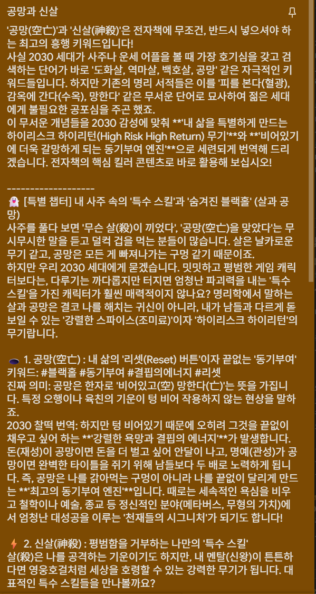

30년의 통찰과 현대적 감각이 만나, 당신의 삶에 가장 선명한 해답을 제시합니다.
운세 상담부터 새 출발을 위한 작명까지,
그리고 육효와 부적까지!
도영 마스터의 모든 솔루션을 만나보세요.
✨
도영상담소
당신의 삶을 설계하는 시간
라이프 아키텍트 도영🏛️
내 운명의 모든 길을 한눈에
사주&작명 서비스
"사주가 인생의 '기본 운영체제(OS)'라면, 작명은 내 캐릭터의 능력치를 극대화하는 '최고급 커스텀 장비'입니다! 🚀
태어날 때 주어진 사주가 조금 아쉽나요?
내 사주의 부족한 에너지를 채우고 장점은 떡상시켜줄
완벽한 오행 핏(Fit)으로 내 운명에 강력한 '버프(Buff)'를 걸어보세요.
단순히 예쁜 한자 조합이 아닙니다.
내 환경과 완벽하게 매칭되어 나만의 고유한 주파수를 찾아주는 퍼스널 브랜딩의 완성! ✨
내 인생을 하드캐리해 줄 '맞춤형 네이밍'으로 결정적 성공의 방아쇠를 당기세요! 🎯"
태어날 때 주어진 사주가 조금 아쉽나요?
내 사주의 부족한 에너지를 채우고 장점은 떡상시켜줄
완벽한 오행 핏(Fit)으로 내 운명에 강력한 '버프(Buff)'를 걸어보세요.
단순히 예쁜 한자 조합이 아닙니다.
내 환경과 완벽하게 매칭되어 나만의 고유한 주파수를 찾아주는 퍼스널 브랜딩의 완성! ✨
내 인생을 하드캐리해 줄 '맞춤형 네이밍'으로 결정적 성공의 방아쇠를 당기세요! 🎯"
육효/부적 서비스
"서양에 타로 카드가 있다면, 동양에는 팩폭의 끝판왕 '육효(六爻)'가 있습니다! 🔮
사주가 인생 전체를 그리는 '망원경'이라면, 육효는 지금 당장의 고민을 꿰뚫는 '실전 현미경'입니다. 🔬
"썸남에게 오늘 연락할까?", "이 주식 지금 살까?" 같은 구체적인 질문에 타로보다 훨씬 예리하게 답해줍니다. 단순한 힐링이나 위로가 아닙니다.
동양의 오랜 통계와 우주의 이치(오행)를 계산해 소름 돋는 YES/NO 타점과 정확한 타이밍(D-Day)까지 짚어냅니다. 🎯
애매모호한 조언에 지치셨나요? 단 한 번의 클릭으로 명쾌한 해답을 얻으세요.
당신의 결정적 순간, 육효가 가장 완벽한 내비게이션이 되어 드립니다! 🚀"
"내 운빨은 내가 커스텀한다!
인생 최적화 패치, 부적" 부적은 내 미래를 긍정적인 방향으로 가이드하는 '운명 커스터마이징 툴'이에요.
복잡한 알고리즘 속에서 지친 당신을 위한 '멘탈 로그아웃' 방지용 장치라고 할까요?
사주가 인생 전체를 그리는 '망원경'이라면, 육효는 지금 당장의 고민을 꿰뚫는 '실전 현미경'입니다. 🔬
"썸남에게 오늘 연락할까?", "이 주식 지금 살까?" 같은 구체적인 질문에 타로보다 훨씬 예리하게 답해줍니다. 단순한 힐링이나 위로가 아닙니다.
동양의 오랜 통계와 우주의 이치(오행)를 계산해 소름 돋는 YES/NO 타점과 정확한 타이밍(D-Day)까지 짚어냅니다. 🎯
애매모호한 조언에 지치셨나요? 단 한 번의 클릭으로 명쾌한 해답을 얻으세요.
당신의 결정적 순간, 육효가 가장 완벽한 내비게이션이 되어 드립니다! 🚀"
"내 운빨은 내가 커스텀한다!
인생 최적화 패치, 부적" 부적은 내 미래를 긍정적인 방향으로 가이드하는 '운명 커스터마이징 툴'이에요.
복잡한 알고리즘 속에서 지친 당신을 위한 '멘탈 로그아웃' 방지용 장치라고 할까요?
공지사항
모든 상담은 예약제로 진행됩니다.🧬
[스페셜 부록 2] 내 사주 속의 16가지 페르소나 (MBTI 매칭표)
서양에 MBTI 16개 유형이 있다면, 동양의 사주명리학에는 나를 이끄는 '10명의 아바타(십신)'가 있습니다. 과연 나의 MBTI는 사주의 어떤 기운과 가장 찰떡궁합일까요? 재미로 보는 2030 맞춤형 사주-MBTI 매칭 알고리즘을 공개합니다!
🔥 1. 외향형(E) : 세상을 향해 에너지를 뿜어내는 '인싸' 아바타들
MBTI
찰떡 사주 기운 (십신/오행)
2030 찰떡 키워드
지니 교수의 사주-MBTI 한 줄 평
ENTJ
👑 편관(偏官) + 겁재(劫財)
#카리스마리더 #불도저
강한 승부욕(겁재)과 세상을 호령하는 카리스마(편관)의 결합! 목표를 향해 거침없이 돌진하는 불도저 리더입니다.
ESTJ
🏢 정관(正官) + 정재(正財)
#팩트폭격기 #디테일보스
룰과 질서를 지키는(정관) 깐깐한 일 처리와, 빈틈없는 현실 감각(정재)으로 조직의 에이스로 활약합니다.
ENFJ
🤝 정인(正印) + 비견(比肩)
#인간리트리버 #소울메이트
따뜻한 엄마의 마음(정인)으로 사람들과 어울리며(비견), 타인의 성장을 열렬히 돕는 다정한 멘토입니다.
ESFJ
🏡 정재(正財) + 비견(比肩)
#오지랖요정 #따뜻한현실파
내 사람들을 꼼꼼하게 챙기며(정재) 주변과 둥글게 화합하는(비견) 친화력 갑, 든든한 베이스캠프입니다.
ENTP
💡 상관(傷官) + 편재(偏財)
#아이디어뱅크 #프로반항아
기존의 낡은 룰을 깨부수는 예리한 언변(상관)과 통 큰 스케일(편재)로 무장한 매력적인 트렌드 세터입니다.
ESTP
🚀 편재(偏財) + 식신(食神)
#행동파 #하이리스크하이리턴
넓은 무대를 즐기고(편재) 오감을 만족시키는 경험(식신)을 쫓는, 스릴과 모험을 즐기는 자유로운 사업가입니다.
ENFP
🌸 상관(傷官) + 정인(正印)
#인간복숭아 #스파크
통통 튀는 호기심(상관)에 사랑받고 싶은 마음(정인)이 더해져, 어딜 가나 스포트라이트를 받는 스파크 요정입니다.
ESFP
🎭 식신(食神) + 도화살(桃花殺)
#분위기메이커 #파티피플
놀고 즐기는 순수한 감성(식신)과 사람을 홀리는 매력(도화살)이 만나, 텐션이 멈추지 않는 타고난 연예인입니다.
💧 2. 내향형(I) : 내면의 깊은 곳으로 딥다이브하는 '철학자' 아바타들
MBTI
찰떡 사주 기운 (십신/오행)
2030 찰떡 키워드
지니 교수의 사주-MBTI 한 줄 평
INTJ
🕵️♂️ 편인(偏印) + 편관(偏官)
#전략가 #독고다이
남들이 보지 못하는 이면을 꿰뚫는 천재성(편인)과 굽히지 않는 고집(편관)으로 나만의 제국을 건설하는 전략가입니다.
ISTJ
⚖️ 정재(正財) + 정인(正印)
#원칙주의자 #완벽주의
한 치의 오차도 없는 정확한 계산(정재)과 보수적인 학자 기질(정인)이 만나, 흔들림 없는 인생의 모범생입니다.
INFJ
🌊 정인(正印) + 수(水) 기운
#깊은통찰 #미스터리
깊은 물(水)처럼 보이지 않는 철학을 탐구하고, 세상의 아픔을 넓게 수용하는(정인) 늙은 영혼의 소유자입니다.
ISFJ
🛡️ 정인(正印) + 식신(食神)
#수호천사 #외유내강
인자한 수용력(정인)으로 곁에 있는 사람에게 아낌없이 베푸는(식신), 조용하지만 든든한 내면의 강자입니다.
INTP
🧠 편인(偏印) + 상관(傷官)
#팩트체커 #마이웨이
엉뚱하고 기발한 상상력(편인)을 논리적인 언변(상관)으로 거침없이 쏟아내는, 매력적인 괴짜 발명가입니다.
ISTP
🛠️ 편재(偏財) + 식신(食神)
#효율끝판왕 #장인정신
쓸데없는 감정 소모 없이 팩트(재성)만 다루며, 나만의 전문적인 기술(식신)을 조용히 연마하는 쿨한 스페셜리스트입니다.
INFP
🌱 식신(食神) + 화개살(華蓋殺)
#감성충만 #이상주의자
나만의 몽환적이고 아름다운 세계(화개살) 속에서 순수한 감성(식신)을 글로, 예술로 풀어내는 감성 장인입니다.
ISFP
🎨 식신(食神) + 비견(比肩)
#소확행 #평화주의자
경쟁보다는 내 페이스대로(비견) 예술과 미식 등 소소한 즐거움(식신)을 누리며 살아가는 온화한 평화주의자입니다.
